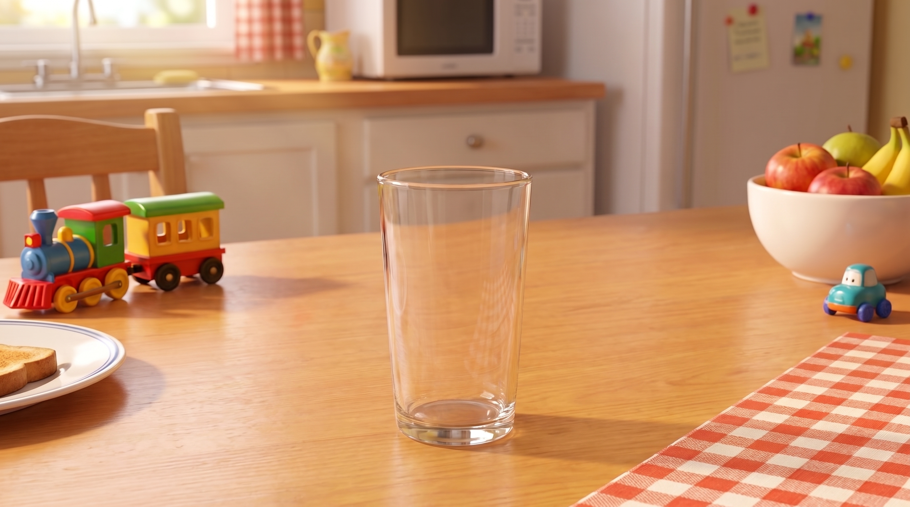
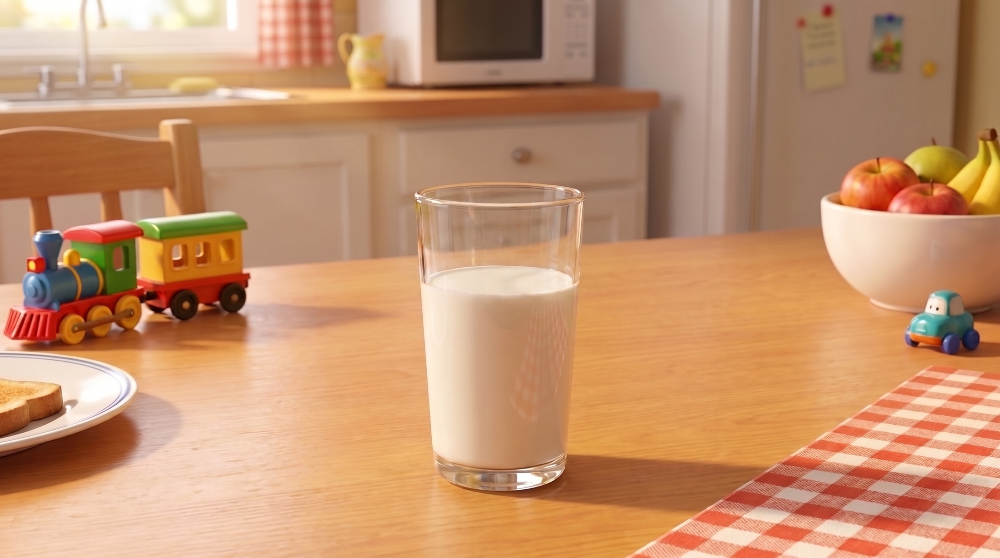
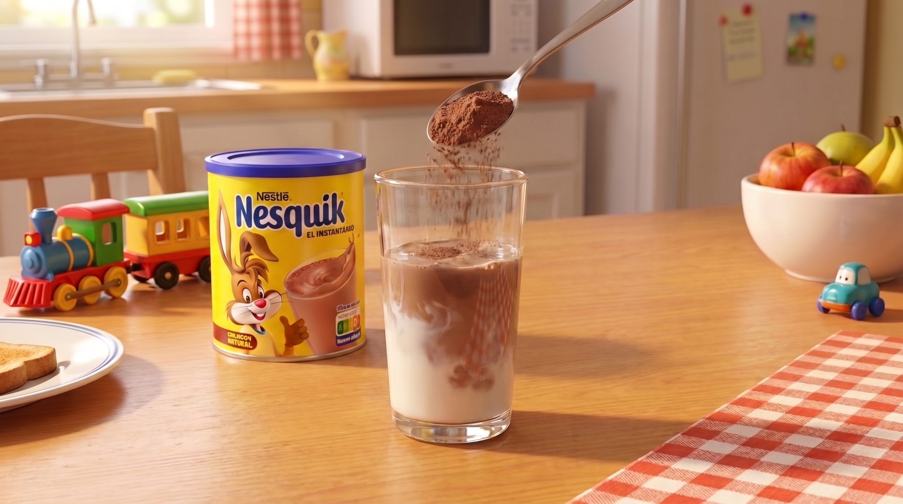
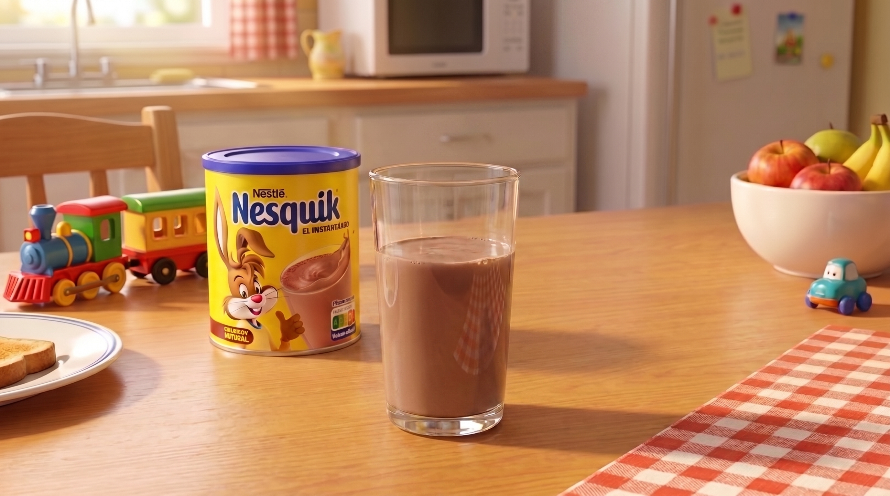
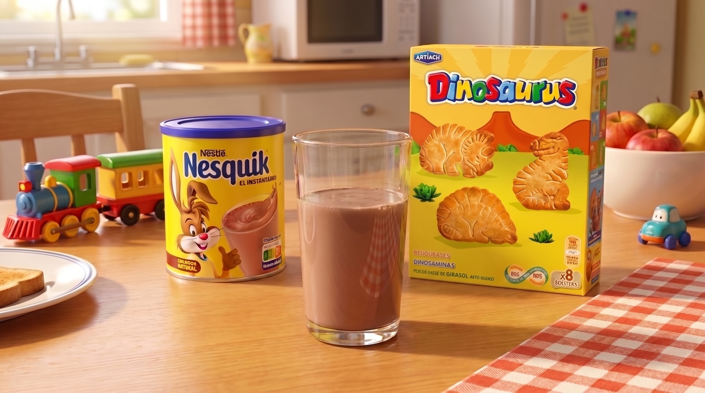
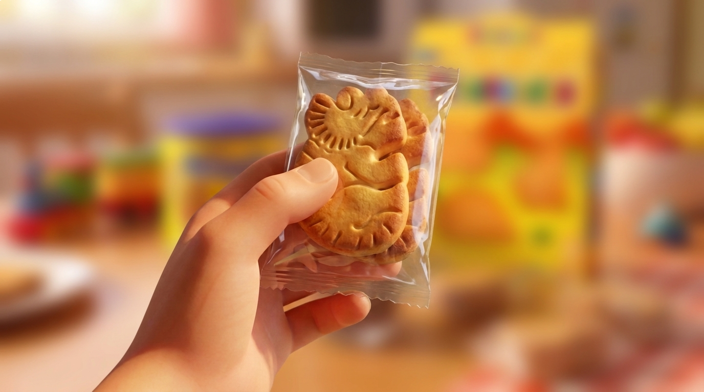
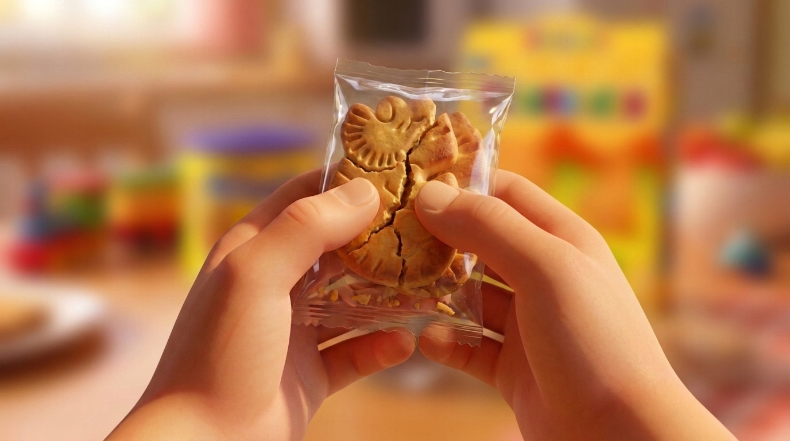
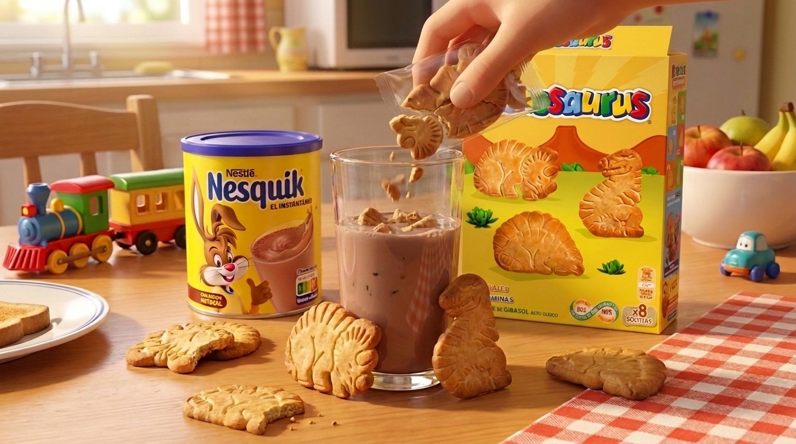
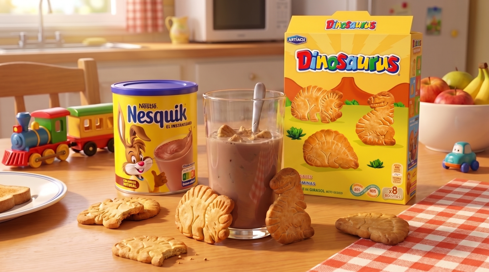

paso 1 de 5
01El vaso (no sé)
Coges un vaso, no un tupper, no una sartén. Un vaso de 45 cl. Lo pones en la mesa y le das las gracias antes de usarlo 🙏
VASO IKEA 365+ · 45CL
paso 2 de 5
02La lechita
No ordeñamos la vaca. La compramos en Mercadona, leche desnatada y sin lactosa de Hacendado. El néctar de los dioses, versionado para estómagos débiles. Pues unos 25cl, si usas mi mismo vaso es un poco más de la mitad del vaso.
LECHE DESNATADA SIN LACTOSA · 25CL
paso 3 de 5
03Nesquik, la main character ;)
La cuchara tiene que ser de postre normal/mediana. La diminuta de café no tiene sentido, la gigante de sopa haces un batido de cemento. Una, dos, tres... hasta ocho.
8cho "me como un bizcocho"

paso 4 de 5
04La ruptura 💔 Dinosaurus
La relación se rompe, pero es lo mejor para ambos (broma poética sin gracia). Coges las galletas dentro del envoltorio las rompes con los pulgares un par de veces y luego los echas dentro del vaso. Mira las imágenes de abajo.
DINOSAURUS · ARTIACH



paso 5 de 5
05Cuchara, y a ser feliz :P
"Sabor a entonces" Siempre lo mismo, siempre perfecto. Super suavecito para la panza, como un abrigo interno, me recuerda que hay cosas que todavía funcionan. Que hay mañanas que valen la pena. El mejor desayuno, también válido para las meriendas.
#DESAYUNOLEMACKS